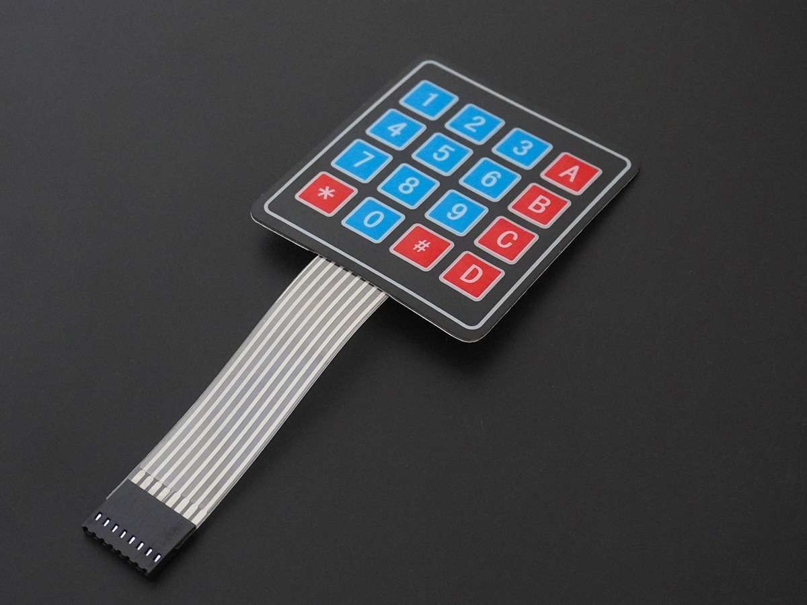
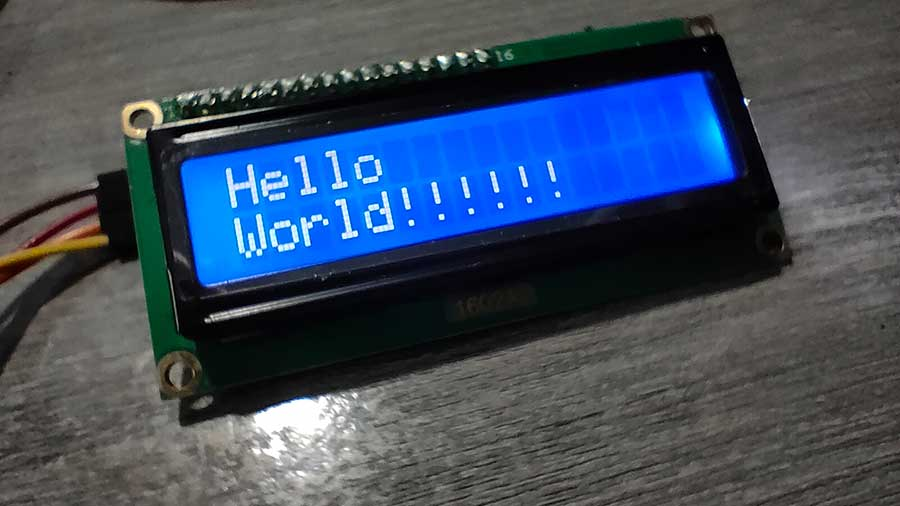

Library ที่ใช้ในโปรเจกต์
- LiquidCrystal_I2C – เป็น Library ใช้กับหน้าจอแสดงผล LCD 16x2
อุปกรณ์ที่ใช้ในโปรเจกต์
- Arduino UNO R4 – บอร์ดไมโครคอนโทรลเลอร์ที่ทำหน้าที่เป็นสมองของระบบ ใช้รับข้อมูลจากอุปกรณ์อินพุต ประมวลผล แล้วสั่งงานอุปกรณ์เอาต์พุต สามารถควบคุมวงจรอัตโนมัติ
- C++ – ภาษาที่ใช้พัฒนาโปรแกรมบน Arduino
- LCD Display 16x2 – อุปกรณ์ที่ใช้แสดงผลหน้าจอของเกม
- Keypad Module – รับอินพุตจากผู้เล่น (เปลี่ยนไปรับผ่านทาง Serial Monitor แทน)

Arduino UNO R4

Keypad
